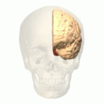

The Occipital Lobe
This is the occipital lobe. It is one of the major four lobes in the human brain that mainly handles visual impression and processes by helping to process information from the eye so that we can understand what we see. The occipital lobe is located in the rearmost portion of the skull. If the occipital lobe gets damaged it can lead to partial or complete blindness.

Back to start